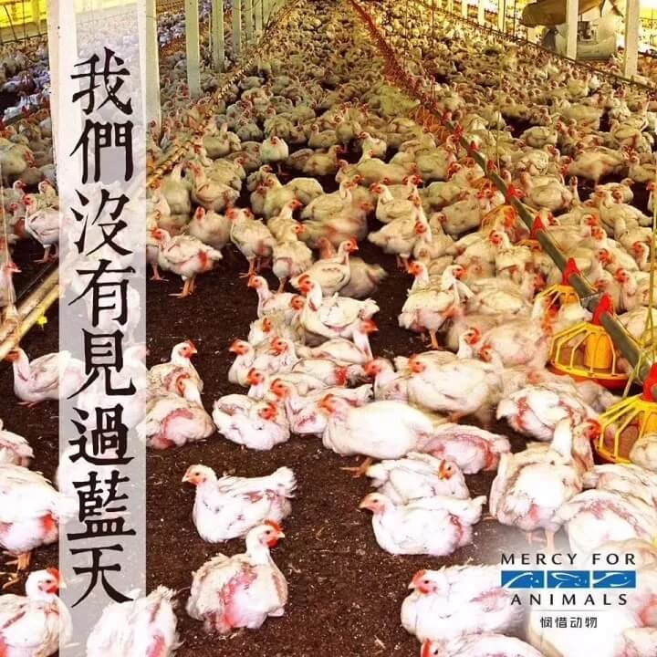

温馨提示：佛学入门系列课程由佛法人生弘法平台（www.xuefo.vip）根据历代祖师大德、当代法师的开示整理而成，为了避免在阅读时产生一些困惑、误解甚至怀疑和诽谤，强烈建议您从第一课开始按顺序学习。最后，愿大家都能成为一个正见的佛教徒，早证菩提。
如果屠宰场的墙壁是透明的，那人们就不敢吃肉了。希望大家都看一看“地球公民”这个片子。
大家举下手，谁看过？哇，只有几个人，这可不行。网上去搜一下“地球公民”，但是这个片子看不下去，要发愿我一定要把这个片子看完，很多人看不下去，必须要看。
看完才知道肉是怎么来的，为了我们，这些众生付出了多大的代价！我们不了解众生的痛苦，所以对众生发不起来慈悲心。我自己去屠宰场拍过片子。
网上也有很多屠宰的片子，看不下去。
地球公民，不要闭着眼睛，一定要看完。
必须要了解众生的痛苦，地狱道看不见，地球上众生的痛苦，已足以让你对众生发菩提心了。
——慈诚罗珠堪布
如果我能让世界上每一个人看一部电影的话，我会要他们看《地球公民》。
——哲学家与伦理学家彼德.辛格（Peter Singer）
观看《地球公民》是我所获得的最佳礼物，我无法相信自己过去竟是如此无知。
——女星布莱丝.达拉斯.霍华（Bryce Dallas Howard）
人的确是万兽之王，他的残暴胜于所有的动物。我们靠其它生灵的死而生活，我们都是坟墓。我在很小的时候就发誓再也不吃肉了。总有一天，人们将视杀生如同杀人。
—— 达芬奇
地球公民：名词，英语单词Earthling，意指地球上一切居民。它不只是针对人类而言，更包括生存在这个星球上的所有生命。所有的众生都有生存下去的渴望！
真理为人们所接受的三个阶段
1. 嘲笑
2. 强烈反对
3. 承认
提示：以下数据出自2003年，非最新。
【宠物的真相】
宠物商店里的绝大多数动物都是从宠物繁殖场进购的，他们经常是一种后院经营的模式，动物们生活的环境肮脏而拥挤，没有兽医照顾，也没有社会干预。
据估计，每年有两千五百万的动物加入到这个无家可归的行列，而且，有27%的纯种血统的狗在其中之列，这两千五百万无家可归的宠物中，又有几百万的宠物会因病死在街头，或死于饥饿，或死于恶劣的天气,或死于暴力伤害以及街头生活的其它危险。
最悲惨的事实是：50%的动物是被它们的主人送到收容所，很多人声称他们从不拜访动物收容所，因为他们不喜欢那里压抑的气氛，但是动物们被迫拥挤在这些悲惨的地方。
很多人拒绝将自己的宠物阉割，原因或许只是希望孩子在某天可以感受所谓”生命的奇迹”。之后很有可能再将他们抛弃，无论在何种情况下，象这样的宠物主人都不自觉的参与了－－每天6千只动物的安乐死。
安乐死的费用比较高，很多收容所使用毒气室代替安乐死，有时，宠物闷在里面要花二十分钟才能死去，这是至今最为残忍也最为痛苦的死亡方式。
【我们的食物怎么来的？】
每分钟都会发生成千上万这样的事件，一年中就有六十亿的动物被屠宰（此数据为2003年，14年后的今天呢？）有人说如果我们必须亲手屠宰动物来获取肉食的话，我们可能都成为素食者。电视中也很少能看到关于屠宰场运营的纪录片，人们或许希望买来的肉来自于毫无痛苦死去的动物。
为了满足肉食者的口腹之欲，动物们必须遭受烙印、剁角、剪耳朵、绝育、去喙等一系列不打麻药的酷刑。有时甚至一半的动物在运输往屠宰场、卖场的路上就已不堪折磨死去了。被人类视为食物的动物们要怎么被杀死？活生生的割喉、流血、开水脱毛、一系列的操作过后，很多时候动物们还没有死，眼睁睁感受着万般的锥心疼痛。
牛奶：我们喝的牛奶（并没有广告上的草原）
奶牛们整天被拴在隔间里，不能做任何的运动。为了提高出奶率，杀虫剂与抗生素是家常便饭。最终，就如同这头奶牛一样，它们竭尽所有，直至崩溃。母牛的寿命可以达到二十年，但是奶牛一般在四年内死去，死了之后，它们的肉为快餐店所用肉。
鸡蛋：我们吃的鸡蛋（母鸡只是工具）
母鸡则挤在产蛋场里，称之为层架式鸡笼的地方，层架式鸡笼，因为箱笼的网线摩擦的缘故，这些鸡的羽毛掉光了，这样加倍的痛楚，这些鸡挤在一块，母鸡都没办法展开一下翅膀，甚至连最微不足道的本能都没办法满足。

【海鲜真的健康吗？】
有的人认为，吃海鲜比吃陆地动物要”更健康”，但请记得有多少的垃圾和污染物被人类倾倒进海洋。一直以来，石油工业，核工业，化学工业等，根本不在意海洋环境的保护，海床成了排放不宜处理的废弃物发的方便场所。
人们对海鲜不断增加的贪欲，正以惊人的速度灭绝海洋里的生命。其实，全球十七个主要渔场中，有十三个已经或濒临枯竭，其余四个也面临过度捕捞的危机。
疾病爆发的赤潮，就是一种比氰化物还强一千倍的微生物，这种微生物寄生于猪的排泄物中，当数万立方米的未经过处理的排泄物，被人类倾倒在河流，湖泊和海洋里，地球水世界的生态系统就变成了无法冲刷的粪池，令人触目惊心。赤潮被列为三级警戒，生化危机艾博拉病毒为四级，艾滋病则是二级，这种危机，其实是大规模肉类消费的结果。
这些友好温驯而无辜的生命，它们原本值得得到人类更好的对待，而此时，它们在地上无依无靠，无助的在水泥地上挣扎慢慢死去。
【缺衣服吗？要掠夺动物的皮毛】
为了满足口腹之欲，但我们人类并不满足于此，我们还利用动物来装扮自己，比如：外套，皮鞋，皮带，手套，裤子，钱包等等，我们的下一个问题就是，我们的衣物来自何方？
人们使用皮革，但是我们很少乃至从未思考过，皮从哪里来？动物们被一车车拥挤的装在卡车上，汽车的轰鸣声和商人的粗鲁驱赶鞭打，都让他们无比的恐惧，你看过它们的眼睛吗？一路没有食物和水，种种对待方式造成牛群伤痕累累，骨盆，肋骨，腿，牛角断裂。大概有一半的牛只，到达屠宰场之前就已死亡。动物们通常是被，钝刀或砍或锯弄死的。
没有法规涉及毛皮厂的屠宰手段，因此，最便宜的方法成了最具吸引力的方法，一氧化碳中毒，马钱子碱，窒息，断脖，肛门电击，活剥皮毛的方式也不在少数。
【残忍恐惧疼痛，只为博人类一笑】
马克吐温曾言：上帝所造一切生命里，人类最为可恶，人类明明知道众生受苦，却又以别的生命的痛苦作为娱乐，美国西部的牛仔竞技，在竞技中，公牛和野马并非因为它们，是未驯服的野生动物而挣扎腾越，而是因为它们感到剧痛，在它们的身体上，一根皮带牢牢缠绕着紧勒住它们的阴部。

此外在竞技中伤害动物的方法，还有很多，比如折断它们的腿，用鞭猛烈抽打，被戏弄，被电棒电击，以及不同的方式拷打折磨，狂暴的冲出围栏。人们在动物万分恐惧、疼痛、挣扎、哀求中欢呼雀跃。
除了栖息地的减少，狩猎活动是野生动物面临的最大威胁，狩猎者每年杀死超过2亿的动物。甚至钓鱼也是很残忍的，鱼类的感觉机制是高度发达的，它们的神经系统非常复杂，它们的感觉细胞和我们人类非常相似，它们能感受的疼痛与我们是一样的。
动物们为什么会做与背离本性，非自然的动作？是因为在食物奖赏的诱惑下吗？不，完成那些动作的，动物们能完成表演，因为它们惧怕惩罚，马戏团最根本的管理绝招是－－刑罚！让万兽之王都惧怕的惩罚！
【以科学之名—活体解剖】
在这些实验里，人们肆意使用有毒物质，电休克和外伤性休克，不施用麻醉剂进行手术。长期不给动物喂食和进水，对他们进行生理和心理的折磨，这些折磨引起动物精神失常，感染等等。
20年前，因为活体解剖而死亡的动物已是天文数字，全球范围来说大概每天40万，并且以每年5%的速度增长.。数字已经大到难以想象：大概每分钟有1.9万，每年有100亿个动物丧生。
【人类生理学并没有通过折磨动物得到突飞猛进】，我们只是对动物知道的更多一点，如果说我们可以通过从动物的心理层面来学到一些东西，那绝不是采用铁棒加电击的方式，更不用说对动物的精神折磨，对有感知生命进行系统性折磨。
尽管我们试图忽略，有的人把对众生的爱护当作多愁善感，他们正是忽视了人性中重要而美好的一面。我们善待动物并不会使我们遭受任何一点损失，事实上我们人类本就应该保证动物们拥有幸福的生活，而且是长远的。
人们常说：“能吃是福”，是时候该改口了：吃素是福！